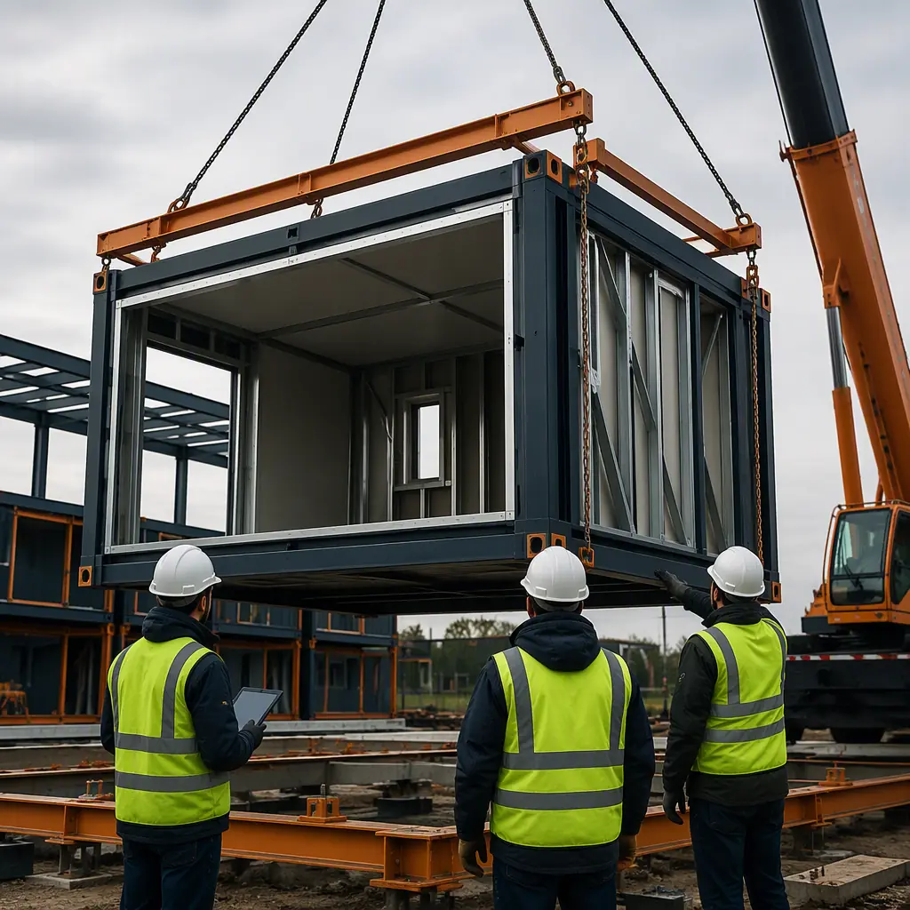
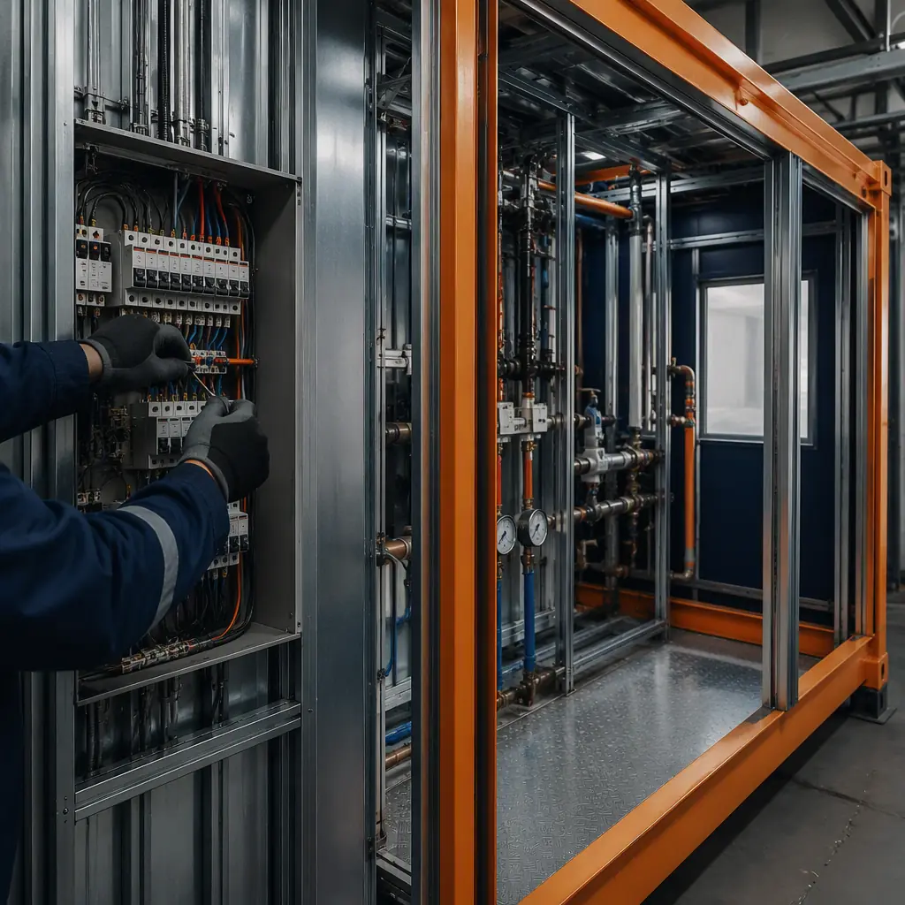
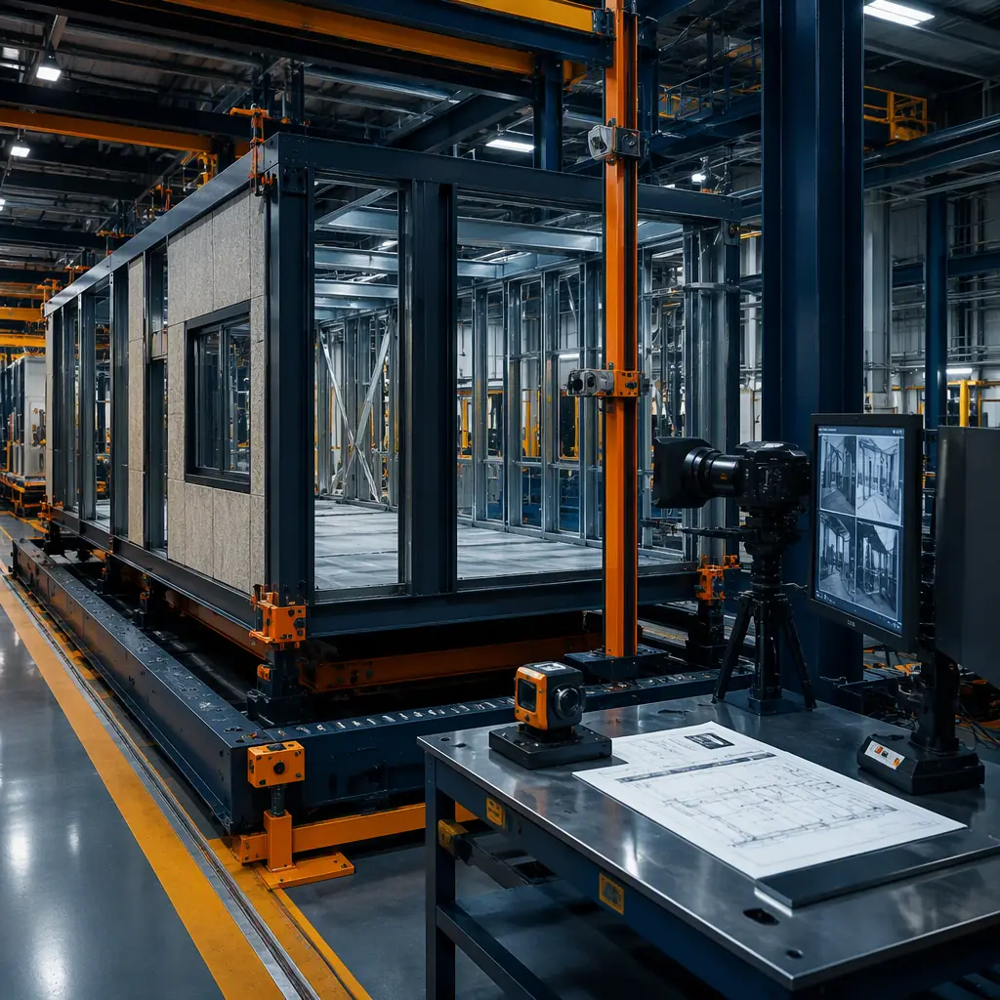
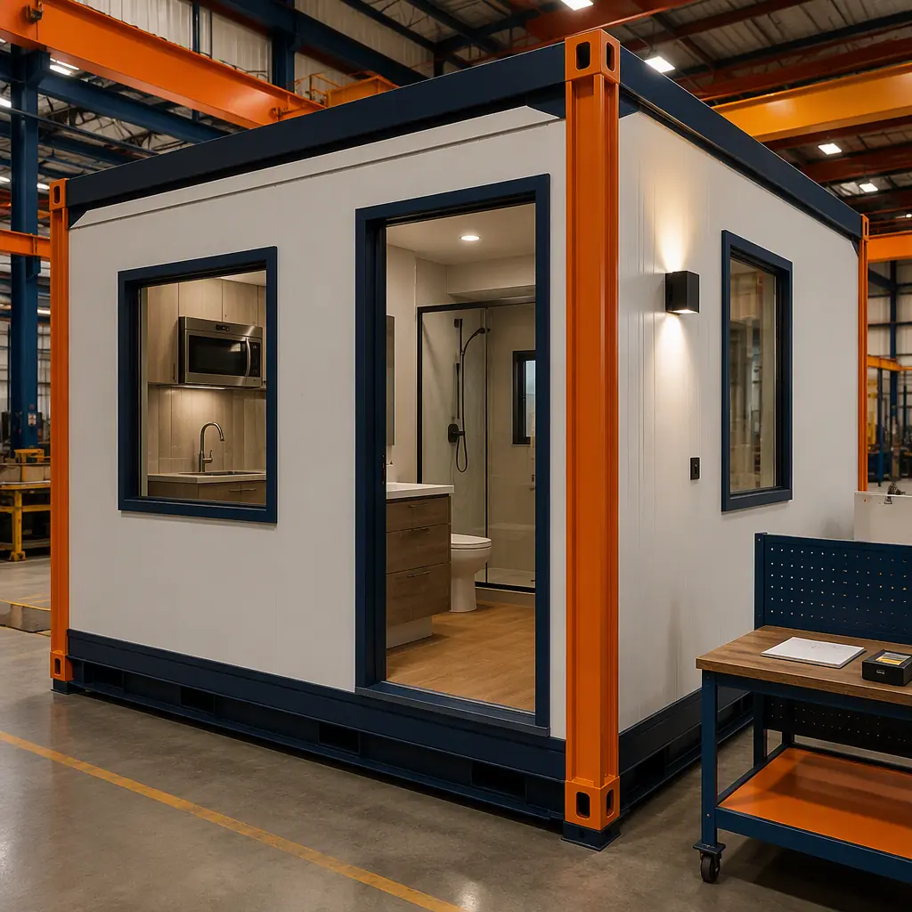
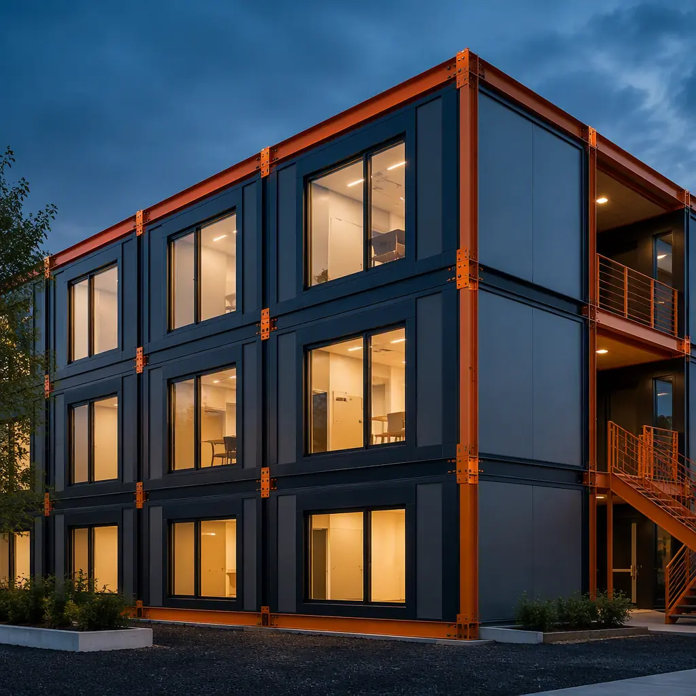

Conventional construction quality control is reactive by design. An inspector visits the site after the work is complete, identifies deficiencies in a punch list, and the contractor returns — sometimes weeks later — to remediate. The structural steel was erected before the weld inspector arrived. The drywall was taped before the framing inspector verified the stud spacing. The HVAC ducts were insulated before the pressure test confirmed the joints were sealed. Each inspection happens after the fact, and each deficiency discovered after the fact costs 5–10 times more to fix than it would have cost to prevent. Modular construction inverts this model: quality control is embedded in the production line, inspection happens at defined hold points before the next trade begins work, and defects are corrected when they are cheapest to fix — before the module is enclosed. This article explains the factory QA/QC systems that make modular construction fundamentally different from site-built construction in quality outcomes: the inspection hold point framework, the commissioning protocols that verify building systems before modules leave the factory, the material traceability systems that support ISO 9001 compliance, and the evaluation framework developers should use to assess a modular manufacturer's quality management system before signing a contract.

Why Factory QC Is a Different Category of Quality Assurance
Site-built construction operates on a model of sequential dependency: the framing trade completes its work, an inspector verifies the framing, the MEP trades install their systems, an inspector verifies the MEP rough-in, and the drywall trade closes the walls. In practice, the inspector may arrive days after the work is complete, by which time the next trade has already started — and if the inspector identifies a deficiency in the framing, the drywall that was installed over it must be removed before the framing can be corrected. This is not a contractor failure; it is a structural feature of site-based construction where inspection is an intermittent event, not a continuous process.
Factory QC operates on a fundamentally different model: inspection is a gate, not a review. At each of 8–12 defined hold points in the module assembly process, work stops, an in-house inspector or third-party auditor verifies the work against the production standard, and the module cannot proceed to the next assembly stage until the hold point is signed off. The hold points are standardized across every module on the production line, which means the 50th module receives the same inspection rigor as the first — not the progressively less rigorous inspection that characterizes site-built projects as the schedule tightens and the punch list grows.
The result is not merely fewer defects; it is a different defect profile. Site-built construction defects cluster in concealed spaces — behind drywall, above ceilings, inside wall cavities — because those are the spaces that receive the least inspection attention. Factory-built modules are inspected at every layer of assembly, from the structural frame through MEP rough-in to interior finishes, with each layer verified before the next layer covers it. The concealed space that is the primary source of site-built defects is, in modular construction, the space that receives the most inspection attention.
| Quality Dimension | Factory QC (Modular) | Site QC (Conventional) |
|---|---|---|
| Inspection timing | At defined hold points, before next trade begins | After work complete — sometimes weeks later |
| Concealed space verification | Every layer inspected before enclosure | Rough-in inspection only; post-drywall inaccessible |
| Repeatability across units | 50th module = 1st module inspection rigor | Inspection fatigue on repetitive rooms |
| Defect correction cost | At point of occurrence — no trade stacking | 5–10x higher — requires demolition and rework |
| Documentation trail | Module-by-module inspection records, digitally archived | Municipal inspection sign-offs + contractor assurance |
| Environmental control | Climate-controlled, no weather exposure during assembly | Weather-exposed; moisture damage to materials common |

Inspection Hold Points — The Factory QA/QC Framework
A modular construction factory operates on a defined hold point schedule that is integrated into the production line, not appended to it. The following is a representative hold point framework for a steel-framed modular unit, based on industry practice and ISO 9001 quality management principles. Developers evaluating modular manufacturers can use this as a reference to compare against a manufacturer's documented quality plan:
- Hold Point 1 — Material Receiving. All structural steel members, framing components, insulation, sheathing, and MEP materials are inspected against purchase order specifications upon receipt. Mill certificates for structural steel are verified against the project's specified steel grade (typically ASTM A572 Grade 50 for module chassis). Welding consumables are checked for compliance with AWS D1.1 structural welding code. This hold point prevents substandard materials from entering production — the most cost-effective quality intervention in the entire process.
- Hold Point 2 — Steel Frame Fabrication and Welding. The module chassis is fabricated from structural steel sections. All full-penetration welds and critical fillet welds are inspected visually (VT) per AWS D1.1 acceptance criteria, and a specified percentage (typically 10–20%) receive ultrasonic testing (UT) or magnetic particle inspection (MT) depending on the weld category and the project's seismic design requirements. Frame dimensional tolerances are verified: overall length and width within ±3mm, diagonal measurements within ±5mm, and twist (out-of-plane deflection at module corners) within ±5mm. A module frame that is out of tolerance at this stage will propagate dimensional errors through every subsequent assembly step.
- Hold Point 3 — Floor and Wall Assembly. After the floor deck and wall framing are installed but before insulation and sheathing are applied, the module envelope is inspected for: steel stud spacing (verified at every stud, not sampled), window and door rough opening dimensions, blocking locations for grab bars, handrails, and wall-mounted equipment (per the project's blocking schedule), and fire-rated assembly components (type X gypsum board layers, mineral wool insulation in fire-rated walls). This is the last opportunity to verify the concealed structure before it is covered.
- Hold Point 4 — MEP Rough-In. After plumbing, electrical, and HVAC rough-in are complete but before drywall is installed, every system is pressure-tested: domestic water piping at 1.5x working pressure for 2 hours (per IPC), DWV piping with a 10-foot water column test or 5 psi pneumatic test, medical gas piping per NFPA 99 at 1.5x working pressure with a 24-hour standing pressure test, and ductwork leakage tested per SMACNA standards. Electrical rough-in is verified for wire gauge, circuit labeling, box fill compliance, and GFCI/AFCI device placement per NEC. This hold point is the single most important quality intervention in modular construction — it catches plumbing leaks, electrical miswiring, and duct leakage before the walls are closed, when correction takes minutes rather than days.
- Hold Point 5 — Pre-Drywall. Immediately before drywall installation, a final concealed-space inspection verifies that all MEP rough-in sign-offs are documented, all fire-stopping and draft-stopping are installed per the fire-rated assembly schedule, all insulation is in place with no gaps or compression, and all moisture-sensitive materials show no signs of water exposure. This is the last visual inspection of the module interior before it is enclosed.
- Hold Point 6 — Interior Finishes. After drywall installation, taping, and finishing, but before painting, drywall finish is inspected for fastener pops, joint visibility, and surface flatness per GA-214 (Level 4 or Level 5 finish as specified). Door and window installation is verified for plumb, level, and operational clearance. Millwork and casework installation is verified for alignment and attachment.
- Hold Point 7 — Final Module Inspection. The completed module undergoes a comprehensive inspection: all MEP systems are operated and verified (every outlet tested, every faucet run, every light switched, every HVAC damper actuated), all doors and windows are cycled, all finishes are inspected under lighting conditions that replicate occupancy, and all fire-rated assembly labels and inspection stickers are verified to be in place. This is the module's pre-shipment inspection — the equivalent of a site-built building's final punch list, performed in the factory where corrections can be made without weather delays, subcontractor scheduling conflicts, or access limitations.
- Hold Point 8 — Pre-Shipment. Before the module is loaded onto a transport trailer, the module exterior is inspected for weatherproofing integrity (WRB continuity, flashing at all penetrations, window and door sealant), the module interior is protected with floor coverings and edge guards, and the transport tie-down points are verified to be undamaged and correctly positioned for the module's center of gravity. The module ships with a completed inspection record package — a digital or printed document set that includes every hold point sign-off, every test result, and every material certification relevant to that specific module.

Factory Commissioning — Verifying Building Systems Before Module Shipping
Commissioning is the process of verifying that building systems perform according to the project requirements — and in conventional construction, it happens at the end of the project, when access is difficult, corrections are expensive, and the schedule has no float remaining. A conventional building's HVAC system is commissioned after the building is substantially complete; if the commissioning agent discovers that the supply air temperature is 5°F above design at the terminal units on the third floor, the remediation may involve opening ceilings that have already been painted, adjusting dampers that are behind finished walls, or replacing duct sections that are inaccessible without demolition.
Modular construction enables a fundamentally different commissioning model: factory commissioning. Each module's mechanical, electrical, plumbing, and fire protection systems are commissioned in the factory, as a standalone system, before the module leaves the production line. When the modules are connected on site, the commissioning scope is reduced to the inter-module connections — the duct taps that join module ductwork to the building's central air handler, the plumbing risers that connect module piping to the building's main stacks, and the electrical feeders that connect module panels to the building's switchgear. The module-internal systems — which represent 80–90% of the commissioning scope in a conventional building — have already been commissioned and documented.
The practical consequence of factory commissioning is that building systems work on day one of occupancy, not week four after the commissioning agent has worked through their issues log. For a hospital module with medical gas piping that was pressure-tested and certified in the factory, the site commissioning agent verifies the pressure at the module interface point and confirms that the factory test documentation is complete — a 30-minute process instead of a 3-day process that involves accessing every gas outlet in every patient room. For a laboratory module with fume hood exhaust that was commissioned in the factory, the site agent verifies the face velocity at each hood and compares it to the factory test values — a verification that confirms the module arrived undamaged, not a discovery process that identifies defects for the first time.
For the BIM integration that supports this commissioning workflow, see our article on modular construction BIM and digital workflow integration.

Material Traceability — ISO 9001 and Supply Chain Quality
ISO 9001:2015 Clause 8.5.2 requires that organizations "use suitable means to identify outputs when it is necessary to ensure the conformity of products and services." In modular construction, this translates to a material traceability system that tracks every significant material — structural steel, fire-rated assemblies, MEP components, architectural finishes — from the supplier's certificate of conformance through the module it was installed in to the specific location within that module.
This level of traceability is achievable in factory production because the materials enter a controlled environment with a defined receiving process. A batch of Type X gypsum board delivered to a construction site may be distributed across five floors by five different drywall crews, with no record of which board went where. The same batch delivered to a modular factory is scanned at receiving, assigned to specific modules in the production schedule, and tracked through installation to the hold point inspection that verifies it was installed in the correct fire-rated assembly. If a supplier later issues a recall or a non-conformance report, the manufacturer can identify every module that contains the affected material within hours, not weeks.
For developers, material traceability translates to three practical benefits. First, it supports the warranty process: when a building component fails prematurely, the manufacturer can trace the material to its supplier, batch, and installation date, which accelerates the root cause analysis and tends to shift warranty liability to the party best positioned to bear it. Second, it supports regulatory compliance: building officials, fire marshals, and accreditation surveyors (Joint Commission, AAAHC, etc.) increasingly expect to see material-level documentation, not just assembly-level certifications. Third, it supports insurance underwriting: a modular building with documented material traceability may qualify for lower construction and property insurance premiums because the insurer can verify that specified materials were actually installed — a verification that is not available for conventional construction beyond the general contractor's invoice records.
For the insurance framework that developers should understand, see our article on modular construction insurance and risk management.
In conventional construction, you discover a drywall screw that missed the stud when the painter notices a dimple in the finished wall. In modular construction, that screw was never driven — because the framing inspector verified every stud's fastener schedule at Hold Point 3, before the drywall was hung, and the hold point log shows who inspected it, when, and with what result. The difference is not that modular workers are more careful — it is that the production system makes quality failures visible when they are cheap to fix, rather than hiding them behind finished surfaces where they become expensive to remediate.
Evaluating a Modular Manufacturer's Quality System — Developer Checklist
Not all modular manufacturers operate at the same level of quality maturity. The modular industry includes manufacturers with ISO 9001-certified quality management systems, manufacturers with documented but uncertified quality plans, and manufacturers whose quality control consists of a final walkthrough before the module ships. Developers evaluating potential modular partners should assess the following before signing a contract:
- Hold point documentation. Request the manufacturer's hold point schedule — the list of defined inspection gates, what is verified at each gate, who performs the verification (in-house inspector or third-party), and what documentation is generated. A manufacturer that cannot produce a written hold point schedule is not operating a quality system; they are operating a production line with spot checks. At minimum, expect hold points covering material receiving, structural frame, MEP rough-in, pre-drywall, interior finishes, and final module inspection.
- Third-party audit program. ISO 9001 certification requires periodic surveillance audits by an accredited registrar, but the audit frequency (typically annual) does not provide project-level quality assurance. Ask whether the manufacturer supplements ISO 9001 surveillance with project-specific third-party inspections — for example, a structural engineer of record verifying weld quality on the project's modules, or a commissioning agent witnessing factory pressure tests. A manufacturer that resists third-party access to the factory floor is a manufacturer whose quality system is designed for certification, not for quality.
- Non-conformance tracking. Every quality system produces non-conformances — materials that fail receiving inspection, welds that fail UT, MEP systems that fail pressure tests. A mature quality system tracks these non-conformances, analyzes them for root cause, and implements corrective actions that prevent recurrence. Ask the manufacturer for a summary of non-conformances from their last three projects — not the full log (which may contain proprietary information), but the categories and counts. A manufacturer that reports zero non-conformances is either not tracking them or not telling you about them; a manufacturer that reports categorized non-conformances with documented corrective actions is operating a real quality system.
- Module inspection record package. For a specific completed project, ask to review the inspection record package for one module — the full set of hold point sign-offs, test results, and material certifications. The package should be organized, complete, and attributable: every sign-off should have a date, an inspector name or ID, and a pass/fail result. A package that consists of check marks with no dates or inspector identification is a quality theater document, not a quality record.
- Subcontractor quality integration. Modular manufacturers subcontract specialty work — fire sprinkler installation, elevator installation, low-voltage systems — to trade contractors. The manufacturer's quality system must extend to these subcontractors: the subcontractor's work should be subject to the same hold point framework, and the subcontractor's test results should be included in the module inspection record package. A manufacturer whose quality system stops at their own employees is a manufacturer whose quality system has a defined boundary — and everything outside that boundary is quality-uncontrolled.
For the broader framework of evaluating modular construction partners across all dimensions — cost, schedule, quality, and financial stability — see our guide on modular construction partner evaluation. For the cost framework that underpins quality decisions, see our modular construction cost per square foot guide.
